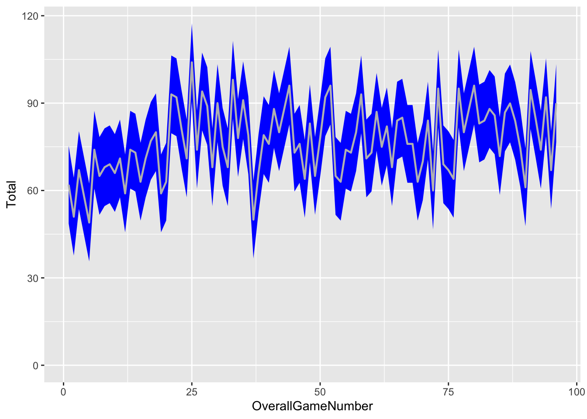

An aesthetic and visually pleasing image will attract attention whatever the context.
Getting started
You may choose to treat this workshop as a demonstration or you may choose to execute the code in real time with the Instructor. This is entirely up to you and is dependent on how you feel you learn.
If you would prefer to focus on listening and taking notes, now is a good time to favourite this site for later use and to get any note-taking devices ready.
Setting up RStudio
If you would like to execute code in real time and create the plots in front of you, the first thing we will do is download two files: a copy of all the R code that you’ll use today, and a simple .csv file with some example data. Before you do that, create a new folder somewhere on your computer and call it “ggplot2_workshop”. I’ve stored mine in the Documents folder. Open your version of RStudio now, and in the bottom right third of the screen you will see a set of options (Files, Plots, Packages, Help, Viewer, Presentation). Select the Files tab, and use the menu to navigate to your version of ggplot2_workshop. When you click on it, it should take you to an empty folder.
RStudio File manager pane
Just below and to the right of the Presentation tab, immediately to the right of the Rename button, there is a cog (settings symbol). Click on that and choose “Set as working Directory”. You should code execute in your console (something like: setwd(“~/Documents/ggplot2_workshop”) ).
We will now use a feature of RStudio to download two files stored on github (the R code for the session, and the example data). In the lower left section of RStudio you will have three tabs: Console, Terminal, Background Jobs. Click on the Terminal tab. When you see some text followed by a $ and a blinking cursor, enter the following code lines:
You should now see the two documents in your files directory on the right of your screen. Click on the .qmd file to open it in RStudio. Alternatively, if you are in a file browser, double clicking this .rmd file should automatically open RStudio.
Switch back to the Console tab on the bottom left (This is the R console).
What did we just do? Within RStudio is a working version of Terminal (from which you can access the Shell or Command Line). We used the wget command and provided a link to a file stored in a Genomics Aotearoa Github repo. When you supply a link to wget, the command will automatically download the file stored at the link.
Packages in RStudio
If you haven’t already installed the RStudio packages mentioned in the instruction email you received, you can install them now by running this code. I recommend you run each line one at a time, letting them finish, before running the next.
# install.packages('ggplot2')# install.packages('dplyr')# install.packages('tidyr')# install.packages('patchwork')# These packages are installed, but they are not yet loaded. We will load the packages as we need them.
What is ggplot2 and how does it work?
ggplot2 is a sub-genre within the R programming language that focuses on visualisation of data. You can use ggplot2 to create a wide array of plots. ggplot2 is covered in great detail here: https://r-graphics.org/
Plots can be created iteratively, that is, you can build up the plot from the most basic element (e.g., where is the data to be plotted stored?), adding detail (what type of plot am I making?) and complexity (what colour should my data points be?).
At each step you can see the result of the code you have added. You can confirm your foundations before you move onto more detail, and once you have created your first plots it’s easy to repurpose code.
The iterative process of ggplot2
library(ggplot2)library(dplyr)
Attaching package: 'dplyr'
The following objects are masked from 'package:stats':
filter, lag
The following objects are masked from 'package:base':
intersect, setdiff, setequal, union
# Load the example data into R:WingspanResults <-read.csv("~/Documents/ggplot2_workshop/WingspanResults.csv")# Note: You may need to modify the filepath in the rea.csv line to match with where your data is saved.# Alternatively, you can use the Import Dataset button to do this. # What is this data?WingspanResults %>%View()
This data comes from a boardgame called Wingspan. The details aren’t important, but in this data you have columns that represent the different ways to score points (e.g., points awarded for birds, points awarded for eggs, points awarded for bonus goals). Each row represents the score for a player in an individual game.
Start the plot building process:
ggplot(data = WingspanResults)
This code has specified where the data to be plotted is found. It has also generated a space for future plotting to take place.
Next, we will begin mapping data onto this plot space. Mapping is the process of defining which variables are assigned to the x and the y axis.
ggplot(data = WingspanResults, mapping =aes(x = Eggs, y = Total))
Mapping is done using the aes() function, and in this case we have mapped data from the column labelled “Eggs” to the x axis, and data from the column labelled “Total” to the y axis. You will soon see that you can use aes and mapping to specify many different variables.
Define what type of plot you would like to create:
The type of plot is specified with the geom function. There are different geom functions for different types of plot:
geom_point() makes a scatter plot.
geom_boxplot() makes a boxplot.
There are geom functions for all types of plot, and they are easily found with google.
A note on format and aesthetic
Aesthetic, stylish plots are a commitment within the ggplot2 ecosystem. You can find style guides that outline colour palettes and themes for creating visually appealing plots. There is also an appropriate style to write your code in. Note the format of my code: it has indents to make it more readable, each “item” has it’s own line.
Importantly, note that “+” symbol. This indicates to ggplot that after specifying the data, there is another function that, while separate, is also part of the code block used to create the plot. The + can be used to stack additional functions, and must always go at the end of the last line (i.e., not at the start of the new line).
Within the geom function we can assign things like a colour to the data points.
If you are following along on your own device, take one minute to change the colour blue to something else. Can you find a colour that doesn’t work?
If you are not following along, use this minute to think about what features you could possibly change other than colour. How would this be useful to you in terms of visualising your data?
Something a little more useful than the colour blue
We can specify the colour (or shape) of data points according to another variable. In this case, let’s specify the colour based on player.
We will do this by adding detail to the aes function (not through the geom function). Remember we are mapping data, but instead of mapping data to the x or y axis like we did before, we are mapping data to the colour.
Here, the colour of the plots is determined by the Total score. We could go one step further and add the Player information from the previous plot, this time by mapping it to shape.
What would happen if we attempted to do this the other way around, and mapped Total to shape, and Player to colour. Would this work? Why not?
Let’s look at another interaction between data types and plot types:
Note that when we ran geom_boxplot() with the continuous variable on the x axis, R did provide us with a warning message:
Continuous x aesthetic - did you forget ‘aes(group = …)’
From this warning message, take a minute to think to yourself how you could solve the issue.
Solution:
ggplot(data = WingspanResults, mapping =aes(x = Eggs, y = TuckedCards, group = Player, colour = Player)) +geom_boxplot()
Functional additions and a new syntax
We can now think about titles, labels and other featuers of plots.
We will also use this time to trial a new way of writing code that some people might find useful.
p_EvsT <-ggplot(data = WingspanResults,mapping =aes(x = Eggs, y = TuckedCards, colour = Player)) # Here I've saved my base information - the data and the mapping - into an object. # Now I can plot using that object and the geom function of choice. p_EvsT +geom_boxplot()
# Oops, that geom doesn't make sense!p_EvsT +geom_point()
# That's better!p_EvsT +geom_point() +labs(x ="Points from Egg mechanic", y ="Points from Tucked Cards mechanic") +ggtitle("Tucked Cards vs Egg mechanics")
After the geom function I’ve used a + and added two new functions: - labs to add an x and y label - ggtitle to add a title
You can save any amount of information into a ggplot object (like p_EvsT).
You can save our most recent figure using the ggsave() function.
ggsave("EggVsTuck.pdf", units ="cm", width =6, height =4)# You can specify units including inches (in), cm, and pixels (px).
Often you’ll find that when you open a pdf saved in this way it will look different to the version created in your RStudio screen.
We have specified the width and height and size of the data points in ‘real’ units which does not necessarily match up to what you plotted within RStudio. Trial and error may be required to create an appropriate plot.
p_EvsT +geom_point(size =2, alpha =0.7) +labs(x ="Points from Egg mechanic", y ="Points from Tucked Cards mechanic") +ggtitle("Tucked Cards vs Egg mechanics")
ggsave("EggsVsTuckedCards.png", units ="in", width =6, height =4)rm(p_EvsT)
Going further with titles and labels
ggplot2 affords precise control over all aspects of the plotting space. The block below is an example of code controlling, among other things: - font (bold or italic) - label spacing and distance - label angle (helpful for long names or dense x axis)
ggplot(data = WingspanResults, mapping =aes(x = Player, y = Birds)) +geom_boxplot() +labs(x ="Player", y ="Points scored by Bird mechanic") +ggtitle("Bird mechanic") +theme(axis.title.x =element_text(vjust =1, size =16, colour ="dodgerblue", face ="italic"),axis.title.y =element_text(vjust =1, size =16, colour ="dodgerblue", face ="bold"), axis.text =element_text(colour ="firebrick", size =12, angle =50, vjust =-0.5, hjust =1))
Faceting
Faceting is a way to split data in plots. We will look at two ways to facet:
First, we will split the data within the plot.
Second, we will split the plot window into a grid.
First, we are going to re-shape our data. This is not the focus of this workshop, so we will not focus on what is happenening here. In short, we are taking data that is currently stored in columns and re-arranging it into rows. The new object will have fewer columns but many more rows. This is referred to as the “long format”.
# Re-shape the data using the pivot_longer function, which comes from the tidyr library. library(tidyr)pl_wingspan <-pivot_longer(WingspanResults, cols =c("Birds", "BonusCards", "EndOfRoundGoals", "Eggs", "FoodOnCards","TuckedCards", "Nectar"))# Rename the column names to something useful:colnames(pl_wingspan)
colnames(pl_wingspan) <-c(colnames(pl_wingspan)[1:4],"ScoringMechanic","PointsRecorded")View(pl_wingspan)# Where previously, for Game 1, we had one row and one column for Birds, one column for BonusCards, one for End of round goals etc.,. Now, Game 1 has multiple rows: one row represents Birds, one for BonusCards etc.,. So, what was once a column is now a row.
Now we can look at different ways to split (or facet) data.
Warning: Removed 78 rows containing non-finite outside the scale range
(`stat_boxplot()`).
Ribbon plots and the order of things
Ribbon plots are a precursor to plotting the Area Under the Curve, which is a useful plot type. We will use this section to examine the order of our functions and how we can use this to control the outcome of the plot.
# First, I need to make a new column that will simply run from 1:number of games played:WingspanResults <-cbind(seq(1,length(WingspanResults$Game),1),WingspanResults)# Rename that new column "OverallGameNumber"colnames(WingspanResults)
colnames(WingspanResults) <-c("OverallGameNumber",colnames(WingspanResults[2:length(colnames(WingspanResults))]))# Plot the total score for each game (for each player):ggplot(data = WingspanResults, aes(x = OverallGameNumber, y = Total, ymin =0, ymax = Total)) +geom_line(colour ="dodgerblue",lwd =0.8)
The Area Under the Curve (AUC) is a common plot type worth knowing:
Instead of plotting the area under the curve (or line), we can use the ribbon function to highlight an area around the line. In this case, let’s highlight a measure of variation (the Median Absolute Deviation).
# Add two new columns, the Total score plus or minus the median absolute deviation (MAD)WingspanResults$MADmax <- WingspanResults$Total +mad(WingspanResults$Total)WingspanResults$MADmin <- WingspanResults$Total -mad(WingspanResults$Total)# Plot the data with the new column data aes input:ggplot(data = WingspanResults, aes(x = OverallGameNumber, y = Total, ymin =0, ymax = Total)) +geom_ribbon(aes(ymin = MADmin, ymax = MADmax),fill ="blue", alpha =0.2) +geom_line(colour ="dodgerblue",lwd =0.8)
In the above code block we have two geom functions (line and ribbon). Does the order matter?
# Plot the data with the new column data aes input:ggplot(data = WingspanResults, aes(x = OverallGameNumber, y = Total, ymin =0, ymax = Total)) +geom_line(colour ="dodgerblue",lwd =0.8) +geom_ribbon(aes(ymin = MADmin, ymax = MADmax),fill ="red", alpha =0.2)
It looks like it does not matter, as we can see oth the blue line and the red ribbon.
Can anyone see why this might not be true?
Solution:
# In the code above we have set the alpha as 0.2. Remember that "alpha" is essentially opacity. At 0.2 the ribbon is mostly transparent!
# Plot the opaque ribbon first, with a line on top:ggplot(data = WingspanResults, aes(x = OverallGameNumber, y = Total, ymin =0, ymax = Total)) +geom_ribbon(aes(ymin = MADmin, ymax = MADmax),fill ="blue", alpha =1) +geom_line(colour ="grey",lwd =0.8)

# Plot the opaque ribbon second, in front of the line:ggplot(data = WingspanResults, aes(x = OverallGameNumber, y = Total, ymin =0, ymax = Total)) +geom_line(colour ="dodgerblue",lwd =0.8) +geom_ribbon(aes(ymin = MADmin, ymax = MADmax),fill ="red", alpha =1)
The principal of choosing the order of geoms can be useful to us:
# First, we need to do some data organisation. The following steps aren't a core part of this lesson. In short, I'm pulling out the columns with points (not "names"), calculating mean and standard error, and then condensing this down into a new data frame.mechanicScores <- WingspanResults[,c(4:8)]mechanicMeans <-as.numeric(colMeans(mechanicScores))stEr <-function(x) sd(x) /sqrt(length(x))mechanicStEr <-as.numeric(stEr(mechanicScores$BonusCards))for(i in2:length(colnames(mechanicScores))){ mechanicStEr <-c(mechanicStEr,as.numeric(stEr(mechanicScores[,i])))}mechanicSummary <-as.data.frame(cbind(colnames(mechanicScores), mechanicMeans,mechanicStEr))colnames(mechanicSummary) <-c("Mechanic","Mean","StandardError")View(mechanicSummary)# Onto the plotting:ggplot(mechanicSummary, aes(Mechanic, as.numeric(Mean), fill = Mechanic)) +geom_col() +labs(title ="Mean points scored for mechanics", x ="Mechanic", y ="Mean points") +theme(axis.text =element_text(size =12, angle =50, vjust =-0.5, hjust =1)) +geom_errorbar(aes(ymin =as.numeric(Mean) -as.numeric(StandardError),ymax =as.numeric(Mean) +as.numeric(StandardError)), position =position_dodge(0.9),width =0.2)
This is one way to plot the error bars. However, some publications will request that the error bars only go above the plot (i.e., that the error bars sit behind the columns).
We can do this by rearranging the order of the plotting:
ggplot(mechanicSummary, aes(Mechanic, as.numeric(Mean), fill = Mechanic)) +geom_errorbar(aes(ymin =as.numeric(Mean) -as.numeric(StandardError),ymax =as.numeric(Mean) +as.numeric(StandardError)), position =position_dodge(0.9), width =0.2) +labs(title ="Mean points scored for mechanics", x ="Mechanic", y ="Mean points") +theme(axis.text =element_text(size =12, angle =50, vjust =-0.5, hjust =1)) +geom_col()
The patchwork function
Often a published figure is not a single plot. It may be comprised of multiple plots joined together based on a theme. We can accomplish this with the patchwork function.